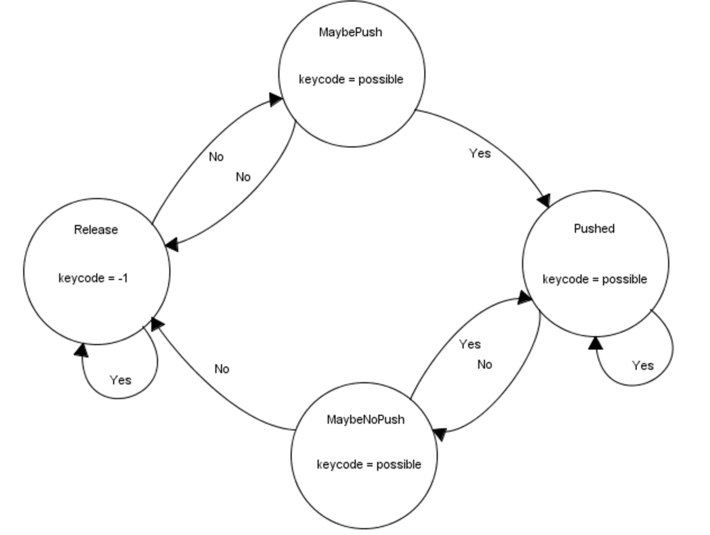
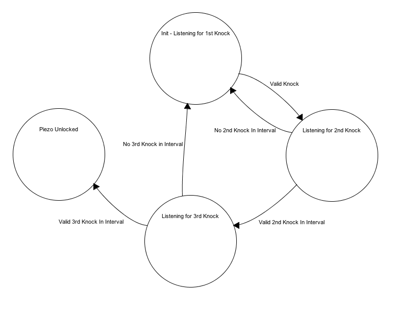

Keypad
This thread implements a finite state machine (FSM) to debounce button presses on the keypad and stores in a buffer the values input by the user so that it can be checked against the passcode required to pass this stage. The finite state machine, as used in our Lab 2 assignment, can be found below:
Figure 8: Keypad FSM
We use a finite state machine to discern valid keypad presses. The finite state machine begins in the ‘Release’ state by checking to see if the keycode is equal to -1. It does this by spawning the scanKey thread, which polls for key presses, by using the PT_SPAWN() function. The thread then yields for 30 milliseconds using PT_YIELD_TIME_msec(30). If keycode is equal to -1, that means no button has been pressed and we return back to the ‘Release’ state through the ‘Yes’ transition. If keycode is not equal to -1, we go through the ‘No’ transition to the ‘MaybePush’ state, storing our value of keycode into a new variable possible along the way. Within the ‘MaybePush’ state, we check to see if keycode is equal to possible, meaning that nothing has changed and the button press seems to be stable. If the answer is ‘No’, we go back to our ‘Release’ state and call our scanKey thread. If the answer is ‘Yes’, the most important portion of the FSM occurs. In the transition from the MaybePushed to the ‘Pushed’ state, the digits are stored (as the possible values). Using the keycode variable set in the scanKey thread, and a separate counter variable, buf_count, valid key presses (i.e. keys zero through nine) are placed inside a buffer called key_buf. If the key pressed is not a valid number, then the digit is not added to the buffer.
Within the ‘Pushed’ state, we once again check if keycode is equal to possible. If the answer is ‘Yes’, we call our scankey thread and feedback into our ‘Pushed’ state. If the answer is ‘No’, we enter into the ‘MaybeNoPush’ state. Within the ‘MaybeNoPush’ state, we check if keycode is equal to possible. If the answer is ‘Yes’, we must check if our keypad is properly debounced by returning to our ‘Pushed’ state and calling the scankey thread. If the answer is ‘No’, we simply return back to the ‘Release’ state and call our scankey thread.
Once the finite state machine has yielded a valid keypress, the number is stored in a buffer. Once there are four numbers in that buffer, the PIC32 checks if the number sequence in the buffer matches the passcode. If it does, then the keypad stage is passed and the user moves onto the potentiometer. If the number sequences do not match, then the user must input another four-digit sequence and the data in the buffer is overwritten by this next fourth-digit sequence.
Potentiometers
We use ADC channels to continously read the outputs of the three potentiometers. Because each of the potentiometers is connected to a multiplexer, we must configure the select bits of the multiplexer accordingly before we read from each potentiometer. After reading the values from each potentiometer, we map them from (0,1024) to (100,999) using a simple linear mapping so that the user can only input 3-digit potentiometer values. We display this value on the screen so that the user can easily adjust the potentiometer knobs to the correct combination. Each potentiometer has its own unlocking value, and any number that is within 30 of that value is considered valid. For example, if the left potentiometer has an unlocking value of 230, then the user must input a value between 200 and 260 on the left potentiometer. We allow a range of plus or minus 30 to allow for a nicer user experience since the values read from the potentiometers oscillate slightly. The range could be modified to a smaller one to increase security.
The PIC32 records the time at which the user has input valid values on each potentiometer. It then continues to poll the three potentiometers to ensure that the valid values are held for 2 seconds. If any of the potentiometer values leave their valid range before the two second countdown, then the potentiometer stage is not passed and the user must again input the correct values. IF the values are held for the full two seconds, then this stage is unlocked. We require the user to hold the correct values for two seconds so that a rogue user cannot simply continously twist and turn the knobs and hope to pass the correct values just once to unlock this stage. Once this stage is unlocked, the user moves onto the piezo stage.
Piezo
The piezo protothread handles the piezo unlocking stage. This stage requires the user to knock the box in a certain 3-knock pattern. Our first task in writing this protothread was to determine how to record a valid knock and to ensure that a single knock was not counted more than once. We connected the piezo output to an ADC channel on the PIC32 and stored in a variable the values read by the channel. We noticed that, when the user was not knocking the box, the value oscillated between 0 and approximately 15. We also noticed that, when we knocked the box and caused the piezo to vibrate, the ADC channel would record one or more consecutive values above approximately 30. Hence, we deduced that a valid knock occurs when the ADC channel records a value above this threshold. After each recorded knock, the PIC32 yields for 50 milliseconds so that values above the knock threshold that follow immediately after the valid knock are not counted. We felt that 50 milliseconds was an appropriate amount of time to yield because a user cannot physically hit the box more than once in 50 milliseconds.
Having determined what constitutes a single valid knock, we set out to determine what constitutes a valid knock sequence. We used time as the distinguishing factor between various knock sequences. We first decided on our own knock sequence by having one partner knock the table while another pertner recorded the time intervals between successive knocks. This, of course, provided crude data but it worked in establishing time intervals for our factory setting knock pattern. The code is written such that the microcontroller records the time at which each knock occurs. After recording the first knock, the microcontroller polls the ADC channel to determine if a second knock occurs in the valid time interval. If it does not, then it reverts to polling for the first knock. If the second knock does occur in the valid time interval, then the microcontroller goes on to polling for a third valid knock. If the third knock occurs in the valid time interval, then the piezo stage is passed the user moves onto the fingerprint scanner. Otherwise, the microcontroller reverts back to listening for the first knock in the sequence again. This sequence of events describes a finite state machine that is shown below.
Figure 9: Piezo FSM
The piezo took a significant amount of time to tune. At first, it was not clear what the threshold value for a valid knock should be, and finding a number that worked well took a significant amount of trial and error. This stage of the unlocking mechanism was particularly difficult to debug because it required the user to knock the box in a very precise manner. Thus, at times, we could not be sure if the piezo stage was malfunctioning due to a bug in the code or hardware or because we were not knocking the box with the correct rhythm. We were able to overcome this issue by increasing the intervals in which the second and third knocks would be considered valid knocks in the sequence while making sure to keep the restraints tight enough such that a rogue user could not simply knock the box three times and pass the piezo stage simply by luck.
Fingerprint Scanner
To detect a valid fingerprint, we used an Arduino Fingerprint Scanner library built by Josh Hawley. When the PIC32 is in the fingerprint scanner state, it polls the Arduino for a HIGH input. When the Arduino senses a valid fingerprint, it sends a HIGH signal to the PIC32 and drives the solenoid valve to unlock the box. Otherwise, it continously sends a LOW signal to the PIC32. Once the PIC32 has sensed a HIGH signal from the Arduino, the box is unlocked and the PIC32 moves onto the programmability state. It remains unlocked for three seconds, after which the solenoid valve closes again.
Programmability
When the box is in the unlocked state, the keypad code, potentiometer combination, and piezo knock pattern can each be customized by the user. The prototheads used to unlock the box are the same protothreads that are used to configure the passcodes. If the user chooses to change the keypad code, the same keypad FSM is used to read the values that the user inputs. Once a four-sequence value has been input, the user is asked whether they would like to keep this new code, keep their current code, or input a different code.
To change the potentiometer combination, the user is asked to input new values for each potentiometer using the keypad. We chose to program the potentiometer combination using the keypad as opposed to the potentiometers themseleves to allow for an enhanced user experience. Using the keypad allows the user input exactly the combination that they would like. Although the factory settings require that each combination have a range of plus or minus 30, the user can choose a value that will not allow such a range. For example, the user can input 110 as the value for a potentiometer, in which case the range is bounded by 100 since the potentiometer values are mapped to (100,999). In this case, the user's range for that potentiometer would be (100,140). After inputting new values for each potentiometer, the user is shown their new combination range asked if they would like to update to the new combination, keep their current combination, or input a different combination.
Changing the piezo knock pattern requires the user to knock the box three times, in any rhythm or speed that they would like. The PIC32 records the relative times at which each of these knocks occur, and builds time intervals of plus or minus 300 milliseconds around them. This means that if the second knock occurs 600 milliseconds after the first knock, then the time interval for the second knock is (300,900). This may seem like an overly large interval for a knock to considered, but through trial and error, we found the programmability of the knock piezo to result in quite robust knock lock patterns. Also, a microcontroller is much more accurate than humans using a stopwatch in recording the times at which knocks occur. For this reason, the reprogrammed knock pattern seemed to even function better than the knock pattern that was shipped with the factory settings.
Command Thread
We set up a simple command thread that chooses which thread to run. During the unlocking stage, the command thread runs the code from keypad stage to potentiometer stage to piezo stage to fingerprint scanner stage. This sets up the cascading system quite nicely, as a user can only be in the potentiometer stage, for example, after they have passed the keypad stage. Once the box has been unlocked, the command thread moves into the configuration state, in which the user can choose to change the keypad, potentiometer, or piezo lock. At this configuration state, the user can also choose to return to the unlocking stage to unlock the box again and run through the four cascading systems.